82%
Apple + Samsung US share (Q3)
US phones: a two-horse race
Shipments fell 9%, yet Apple's share rose from 50% to 57% and Samsung's from 24% to 25%.
뉴스핌Gajeon Radar
Gajeon Radar (가전레이더) tracks appliance news and launches across Korea, the US, Japan, China and Europe, and picks AI and small appliances from Danawa popularity ranks and reviews — every morning at 7 AM KST, with a source and date on every number.
Counterpoint says US smartphone shipments fell 9% in Q3, but Apple (57%) and Samsung (25%) now hold 82% combined. TrendForce expects global mini-LED TV shipments to rise 116% this year to 28.78M units. Omdia forecasts 65-inch LCD TV panel costs to rise 6.5% YoY in Q4.
Shipments fell 9%, yet Apple's share rose from 50% to 57% and Samsung's from 24% to 25%.
뉴스핌TrendForce sees 28.78M units, about 15% of all TVs, with LG's mini-LED shipments at 1.75M (up more than 800%).
코리아헤럴드(The Korea Herald)Omdia cites higher PCB and glass prices, and says the rise will exceed 10% if polarizer and driver IC prices also climb.
옴디아(Omdia)Per IFR, China installed 354,226 units; Korea installed 30,216 (−1%), ranking 4th, and leads in robot density at 1,066.
로봇신문Per Omdia, Apple fell 28% and Samsung 22%; Lenovo was the only top-five vendor to grow, up 12%.
옴디아(Omdia)Samsung is tipped for a CES 2027 debut, LG plans a bipedal humanoid in Q1 next year, and XPeng starts IRON mass production in January 2027.
KPI뉴스신랑(新浪)Rules: top 5 in the Danawa category · 100+ reviews · rating 4.7+ · AI features stated by the maker

MD · Danawa's No.2 refrigerator, an AI model. Measure for its 914mm width first.
Danawa's No.2 refrigerator. 870L 4-door with an AI saving mode that learns usage patterns to set temperatures, energy grade 1.
Danawa refrigerators, No.2 · reviews 945 · rating 4.8
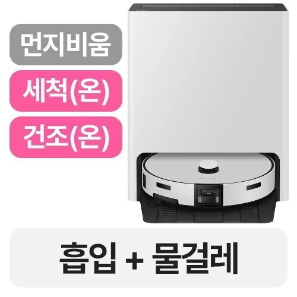
MD · Its strength is recognizing objects and clear liquids. For the auto water-drain model (VR90F01SAG), check your installation conditions first.
An AI robot vacuum whose camera recognizes objects and even clear liquids; 763 reviews.
Danawa robot vacuums, No.2 · CES 2026 AI features · reviews 763 · rating 4.7
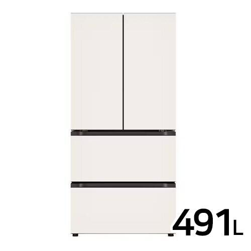
MD · Kimjang season is on now. Check the 835mm width and the 8 included kimchi containers first.
No.4 kimchi refrigerator in kimjang season. 491L 4-door, store-bought kimchi scan storage, multi-purpose custom storage, energy grade 1.
Danawa kimchi refrigerators (stand), No.4 · kimchi-making season · reviews 464 · rating 4.9

MD · The steam-sterilizing station is the differentiator. Climbing up to 8.8cm helps in homes with many thresholds.
36,000Pa suction, AI object recognition with camera and 3D sensing, steam-sterilizing mop station.
Danawa robot vacuums, No.5 · new in October · reviews 499 · rating 4.8
[Ad] "Buy on Coupang" links are part of the Coupang Partners program; we may earn a commission. Coupang ships within Korea.

Danawa's No.1 electric heater. The same line is No.2 (999+ reviews), KRW 26B cumulative.
Danawa electric heaters, No.1 · reviews 839 · rating 4.8
For Studio and single households, design-conscious 20s–30s, pet owners
Edge Retro TV-like cube design, reflector heater
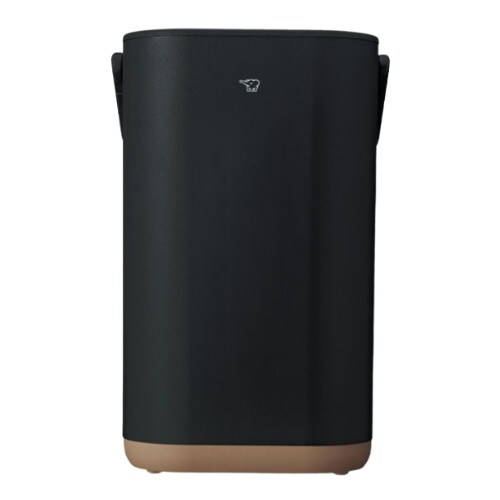
Danawa's No.1 humidifier. Online humidifier purchases peak in early November.
Danawa humidifiers, No.1 · reviews 69 · rating 4.7
For Families with infants, hygiene-minded 30s–40s
Edge Humidifier from Zojirushi's STAN design line, premium price
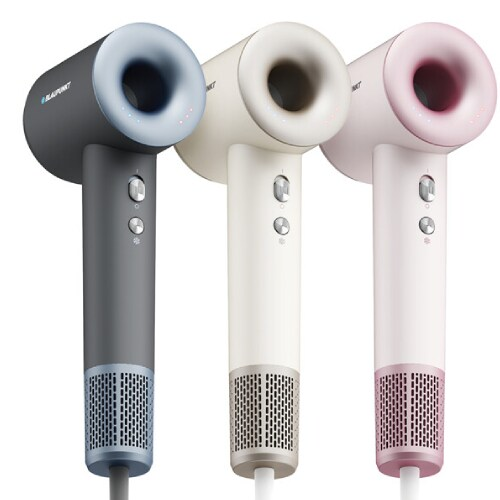
No.4 right after Dyson at No.2 and No.3 — the KRW 60,000 alternative.
Danawa hair dryers, No.4 · reviews 535 · rating 4.8
For Women in their 20s–30s wanting a high-speed dryer, gift buyers
Edge High-speed dryer at around KRW 60,000, high rating

Danawa's No.1 AI recorder; 999+ reviews and a 4.82 rating on the official store.
Danawa AI recorders, No.1 · reviews 999+ · rating 4.82
For Office workers with many meetings, lectures and calls; reporters and sales reps
Edge Card-type · 4 mics · 5m pickup · transcription & summaries in 112 languages
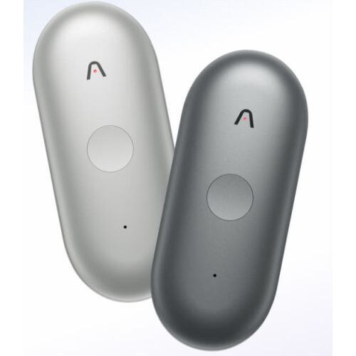
Danawa's No.2 AI recorder; 999+ reviews and a 4.77 rating on the official store.
Danawa AI recorders, No.2 · reviews 999+ · rating 4.77
For Solo business owners and students who record on the go
Edge Capsule wearable · physical button · 17.5g
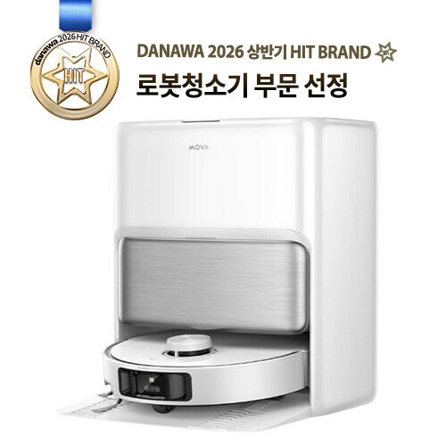
No.1 robot vacuum at about a third of the No.2's price.
Danawa robot vacuums, No.1 · reviews 999+ · rating 4.9
For Dual-income families in their 30s–40s wanting a value all-in-one
Edge The only top-ranked model at around KRW 500,000

A steady seller with 934 reviews and an all-stainless interior.
Danawa air fryers, No.3 · reviews 934 · rating 4.6
For 40s–50s worried about peeling coatings, hygiene-minded homes
Edge All-stainless interior at around KRW 80,000
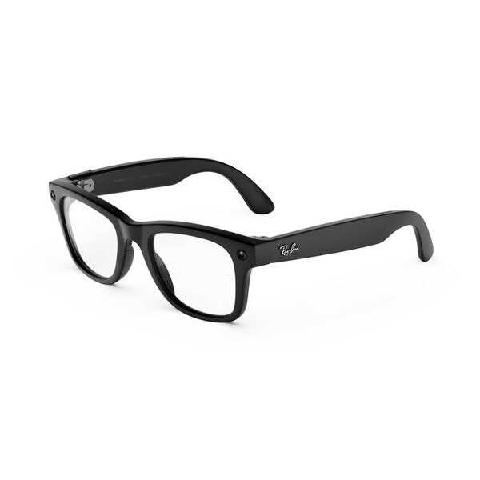
Danawa's No.1 AI smart glasses. Meta has 94% of display-less AI glasses shipments.
Danawa AI smart glasses, No.1 · reviews 1 · rating —
For Early adopters, 20s–40s who shoot lots of photos and video
Edge Meta AI · 2 speakers · 6 mics · 32GB
No.4 kimchi refrigerator in kimjang season. 491L 4-door, store-bought kimchi scan storage, multi-purpose custom storage, energy grade 1.
Danawa kimchi refrigerators (stand), No.4 · kimchi-making season · reviews 464 · rating 4.9
For 3–4 person households that make kimchi, homes replacing a kimchi fridge for a wedding or move
Edge 491L 4-door 4-room · kimchi scan storage · multi-purpose storage · energy grade 1
Danawa's No.2 refrigerator. 870L 4-door with an AI saving mode that learns usage patterns to set temperatures, energy grade 1.
Danawa refrigerators, No.2 · reviews 945 · rating 4.8
For Newlyweds and movers, 4-person households upgrading to large capacity
Edge 870L 4-door · AI saving modes · UV clean+ · energy grade 1
36,000Pa suction, AI object recognition with camera and 3D sensing, steam-sterilizing mop station.
Danawa robot vacuums, No.5 · new in October · reviews 499 · rating 4.8
For Homes with pets or infants, premium robot vacuum upgraders
Edge AI object recognition · steam mop sterilization · hot-water wash & warm-air dry · 4.5cm (max 8.8cm) thresholds

Coupang price ₩1,519,000 (41% below list ₩2,599,000), 3,605 reviews, 5.0 rating (checked Nov 24).
41% off list · 3,605 Coupang reviews · reviews 3,605 · rating 5.0
For Homes wanting an 85" screen
Edge 85" 4K QLED · stand · installation

Coupang price ₩1,390,000 (4% below list ₩1,450,000), 16,064 reviews, 5.0 rating (checked Nov 24).
16,064 Coupang reviews · 5.0 · reviews 16,064 · rating 5.0
For iPhone users switching without a carrier contract
Edge 6.3-inch 120Hz · A19 · 48MP+48MP · MagSafe 20W

Coupang price ₩398,050 (5% below list ₩419,000), 9,128 reviews, 5.0 rating (checked Nov 24).
9,128 Coupang reviews · 5.0 · reviews 9,128 · rating 5.0
For Galaxy phone users
Edge 40mm · Bluetooth · silver

Coupang price ₩350,550 (5% below list ₩369,000), 877 reviews, 5.0 rating (checked Nov 24).
877 Coupang reviews · 5.0 · reviews 877 · rating 5.0
For iPhone users buying a first Apple Watch
Edge 40mm LTPO OLED 1000nit · 18h (32h low power) · 64GB

Coupang price ₩428,000 (43% below list ₩759,000), 4,086 reviews, 4.5 rating (checked Nov 24).
43% off list · 4,086 Coupang reviews · reviews 4,086 · rating 4.5
For Families of 3–4
Edge Dry-and-grind type · greige
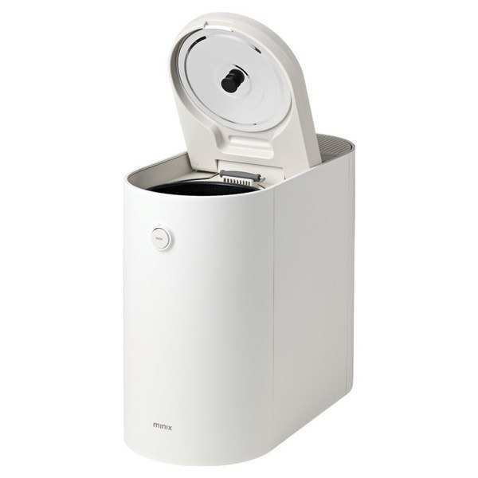
Coupang price ₩363,000 (43% below list ₩639,000), 5,290 reviews, 5.0 rating (checked Nov 24).
43% off list · 5,290 Coupang reviews · reviews 5,290 · rating 5.0
For Households of 1–3
Edge Dry-and-grind type · greige

Coupang price ₩179,950, 682 reviews, 5.0 rating (checked Nov 24).
682 Coupang reviews · 5.0 · reviews 682 · rating 5.0
For Home-care beginners
Edge medicube AGE-R · home beauty device · black

Coupang price ₩296,000 (19% below list ₩369,000), 23,490 reviews, 5.0 rating (checked Nov 24).
19% off list · 23,490 Coupang reviews · reviews 23,490 · rating 5.0
For iPhone users who want ANC for the commute
Edge Adaptive ANC · IP57 · ~8h with ANC · Bluetooth 5.3

Coupang price ₩154,160, 1,240 reviews, 5.0 rating (checked Nov 24).
1,240 Coupang reviews · 5.0 · reviews 1,240 · rating 5.0
For Galaxy phone users wanting ANC earbuds
Edge Adaptive ANC · 26h with ANC · IP57 · Bluetooth 5.4

Coupang price ₩628,000 (16% below list ₩749,000), 9,308 reviews, 5.0 rating (checked Nov 24).
16% off list · 9,308 Coupang reviews · reviews 9,308 · rating 5.0
For iPhone users, a first iPad for lectures and video
Edge 11-inch · A16 · 128GB · up to 30W charging

Coupang price ₩439,000 (29% below list ₩619,000), 1,585 reviews, 5.0 rating (checked Nov 24).
29% off list · 1,585 Coupang reviews · reviews 1,585 · rating 5.0
For Frequent flyers and commuters who care about sound
Edge Adaptive ANC (QN3) · 30h with ANC · LDAC · 254g
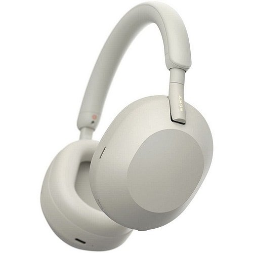
Coupang price ₩379,000 (26% below list ₩519,000), 9,378 reviews, 5.0 rating (checked Nov 24).
26% off list · 9,378 Coupang reviews · reviews 9,378 · rating 5.0
For First-time ANC headphone buyers
Edge Adaptive ANC · 30h with ANC · 250g · USB-C

Coupang price ₩689,000 (46% below list ₩1,290,000), 684 reviews, 4.5 rating (checked Nov 24).
46% off list · 684 Coupang reviews · reviews 684 · rating 4.5
For Households wanting an all-in-one under KRW 1M
Edge 19,000Pa · rotating mops with extending arm · auto-empty, hot-water wash, warm-air dry · AI object recognition, 3D avoidance
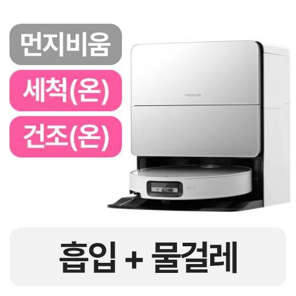
Coupang price ₩1,190,000 (35% below list ₩1,840,000), 1,858 reviews, 5.0 rating (checked Nov 24).
35% off list · 1,858 Coupang reviews · reviews 1,858 · rating 5.0
For Flagship performance at a lower price
Edge 22,000Pa · sonic vibrating mop · auto-empty, hot-water wash, warm-air dry, detergent, auto refill · AI object recognition

Listed in April, already 396 reviews and a 4.9 rating.
Danawa air fryers, No.6 · reviews 396 · rating 4.9
For 3–4 person households needing capacity, value buyers
Edge 9L capacity at around KRW 60,000

Cook and store in glass containers. A hit in Japan, 163 reviews in Korea.
Danawa 'Ninja' No.6 · hit in Japan · reviews 163 · rating 4.8
For 1–2 person households, meal-preppers, people avoiding coatings
Edge One glass container to cook, store and reheat

Steam plus air fry — China is moving the same way.
Danawa air fryers, No.5 · reviews 284 · rating 4.8
For 3–4 person households wanting moist, healthy cooking, 40s–50s
Edge Dual steam + air fry combination

Food waste disposers grew in search over two years; a compact model from a proven line.
Danawa food waste disposers, No.5 · reviews 37 · rating 4.7
For 1–2 person households with small kitchens
Edge Compact model of the proven Plender line

Sales about 4x in four months, in step with winter soup season.
Japan DIME 2026 hit · reviews 수집 전 · rating —
For 1–2 person households wanting a breakfast substitute, baby-food families
Edge A JPY 10,000-class blender that makes soup on auto programs
An AI robot vacuum whose camera recognizes objects and even clear liquids; 763 reviews.
Danawa robot vacuums, No.2 · CES 2026 AI features · reviews 763 · rating 4.7
For Homes with infants or pets, premium robot vacuum buyers
Edge 3D object recognition · clear-liquid detection · 100℃ steam sterilization
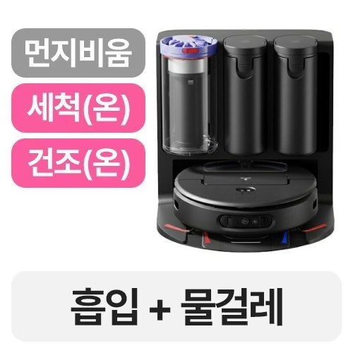
AI tells wet spills from dry debris to vacuum and mop in one pass.
Listed on Danawa 2026.01 · MSRP KRW 1.79M · reviews 317 · rating 4.6
For Premium buyers who want one machine for vacuuming and mopping
Edge AI dirt detection + vacuum/wet-clean combo
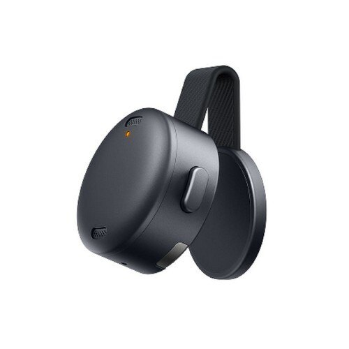
Danawa's No.4 AI recorder, a wearable around KRW 100,000.
Danawa AI recorders, No.4 · reviews 수집 전 · rating —
For First-time AI recorder users
Edge Ultra-compact wearable · around KRW 100,000

Listed in November and straight to No.3. A display model that shows translation and directions on the lens.
Danawa AI smart glasses, No.3 · listed this month · reviews 7 · rating —
For Presenters needing interpretation or a prompter, frequent business travelers
Edge Built-in display · live translation · automatic meeting notes

Coupang price ₩1,720,500 (27% below list ₩2,389,000), 130 reviews, 5.0 rating (checked Nov 24).
27% off list · 130 Coupang reviews · reviews 130 · rating 5.0
For Mid-size OLED for gaming and movies
Edge 48-inch 4K OLED · 120Hz · AI voice & smart assistant · Netflix, YouTube, mirroring
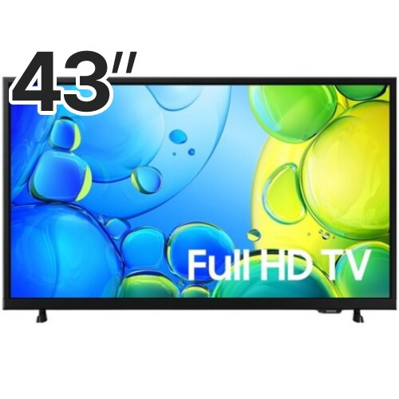
Coupang price ₩437,980 (12% below list ₩498,000), 10 reviews, 4.5 rating (checked Nov 24).
12% off list · 10 Coupang reviews · reviews 10 · rating 4.5
For Studios, second TVs, tight budgets
Edge 43-inch FHD · Netflix, YouTube, mirroring · AI voice & smart home · energy grade 1

Coupang price ₩2,290,000, 221 reviews, 5.0 rating (checked Nov 24).
221 Coupang reviews · 5.0 · reviews 221 · rating 5.0
For Homes upgrading the living-room TV to OLED
Edge 65" 4K OLED · stand · installation

Coupang price ₩1,140,000 (36% below list ₩1,790,000), 46 reviews, 5.0 rating (checked Nov 24).
36% off list · 46 Coupang reviews · reviews 46 · rating 5.0
For Entry OLED for small rooms and gaming
Edge 48" 4K OLED · stand · installation

Coupang price ₩459,000, 52 reviews, 4.5 rating (checked Nov 24).
52 Coupang reviews · 4.5 · reviews 52 · rating 4.5
For 4K TV for bedrooms and studios
Edge 43" 4K UHD · stand · installation

Coupang price ₩1,193,000 (15% below list ₩1,403,600), 10,178 reviews, 5.0 rating (checked Nov 24).
15% off list · 10,178 Coupang reviews · reviews 10,178 · rating 5.0
For Galaxy users switching without a carrier contract
Edge 6.3-inch 120Hz · Exynos 2600 · 4,300mAh · 50MP triple

Coupang price ₩3,290,000, 268 reviews, 5.0 rating (checked Nov 24).
268 Coupang reviews · 5.0 · reviews 268 · rating 5.0
For
Edge
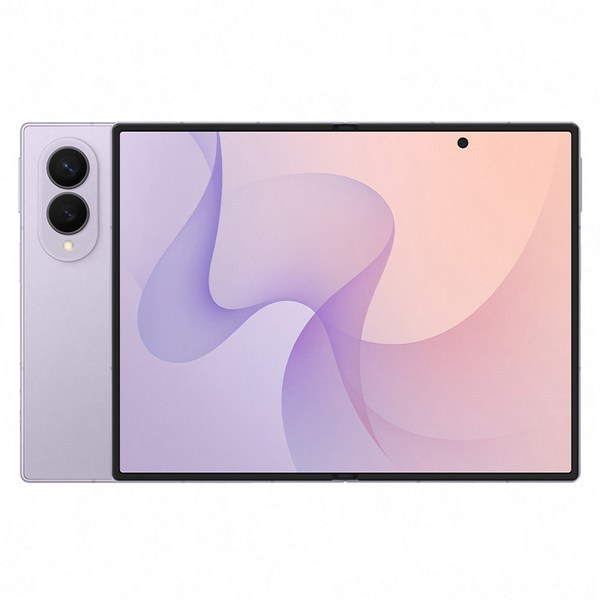
Coupang price ₩2,164,100 (5% below list ₩2,278,100), 6,341 reviews, 5.0 rating (checked Nov 24).
6,341 Coupang reviews · 5.0 · reviews 6,341 · rating 5.0
For
Edge

Coupang price ₩452,000 (23% below list ₩589,000), 464 reviews, 5.0 rating (checked Nov 24).
23% off list · 464 Coupang reviews · reviews 464 · rating 5.0
For New runners and marathoners tracking training
Edge 1.3-inch AMOLED · GPS · 5ATM · up to 13 days
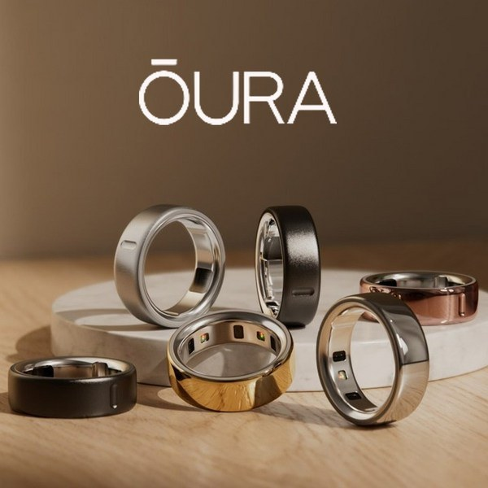
Coupang price ₩595,000, 2 reviews, 4.5 rating (checked Nov 24).
2 Coupang reviews · 4.5 · reviews 2 · rating 4.5
For Sleep and health tracking in a ring
Edge Smart ring · overseas shipping (duty included per listing)
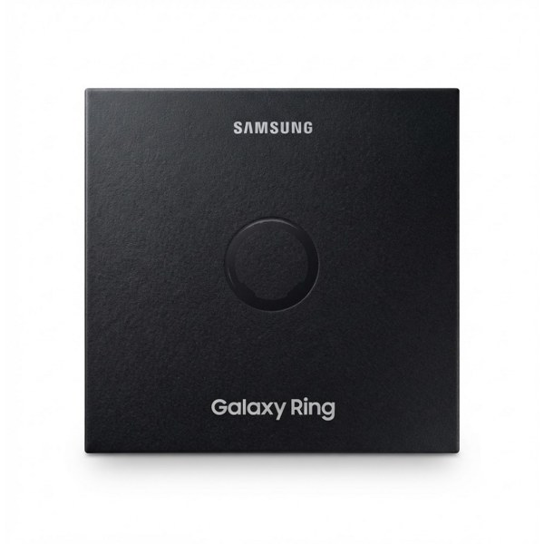
Coupang price ₩309,000, 145 reviews, 5.0 rating (checked Nov 24).
145 Coupang reviews · 5.0 · reviews 145 · rating 5.0
For Galaxy users who prefer a ring to a watch
Edge Smart ring · titanium · size 5

Coupang price ₩353,900 (45% below list ₩649,000), 2,395 reviews, 5.0 rating (checked Nov 24).
45% off list · 2,395 Coupang reviews · reviews 2,395 · rating 5.0
For Homes worried about odor and bugs
Edge Dry-and-grind type · white

Coupang price ₩360,000 (39% below list ₩599,000), 183 reviews, 5.0 rating (checked Nov 24).
39% off list · 183 Coupang reviews · reviews 183 · rating 5.0
For Small kitchens, 1–2 person homes
Edge Dry-and-grind · 2L · grey

Coupang price ₩674,120 (51% below list ₩1,390,000), 108 reviews, 4.5 rating (checked Nov 24).
51% off list · 108 Coupang reviews · reviews 108 · rating 4.5
For Large families
Edge Dry-and-grind · 5L · light beige
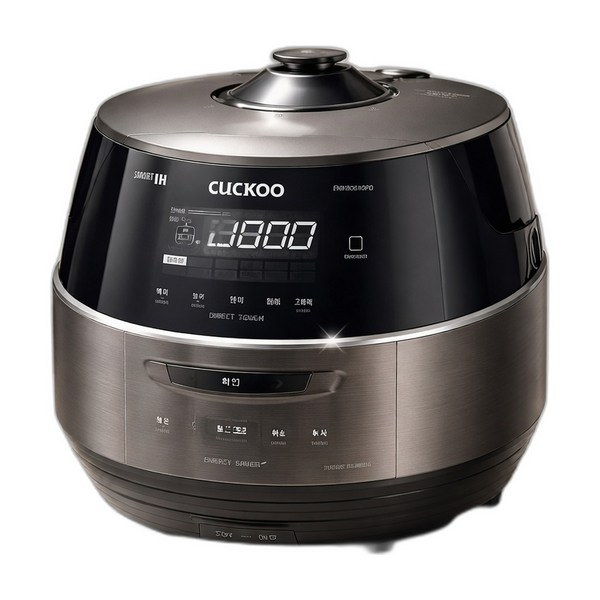
Coupang price ₩360,000 (31% below list ₩522,100), 3,858 reviews, 4.5 rating (checked Nov 24).
31% off list · 3,858 Coupang reviews · reviews 3,858 · rating 4.5
For Families replacing a rice cooker
Edge IH pressure · 6 cups · dark grey
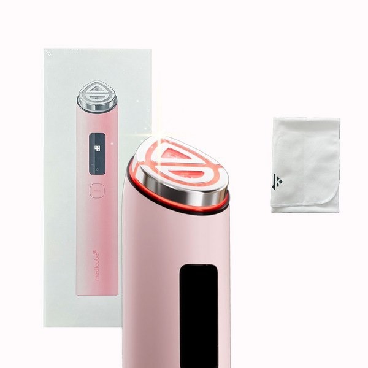
Coupang price ₩259,000 (31% below list ₩380,810), 41 reviews, 4.5 rating (checked Nov 24).
31% off list · 41 Coupang reviews · reviews 41 · rating 4.5
For Users stepping up from Booster Pro
Edge medicube AGE-R · with pouch · pink

Coupang price ₩242,000, 17 reviews, 4.0 rating (checked Nov 24).
17 Coupang reviews · 4.0 · reviews 17 · rating 4.0
For Users wanting a focused-care device
Edge medicube AGE-R · white

Coupang price ₩1,215,000 (6% below list ₩1,300,200), 95 reviews, 5.0 rating (checked Nov 24).
95 Coupang reviews · 5.0 · reviews 95 · rating 5.0
For Students and workers wanting a premium tablet for notes and video
Edge 11-inch D-AMOLED 2X 120Hz · Dimensity 9400+ · 12GB/128GB · IP68
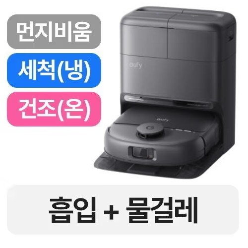
Coupang price ₩596,900 (40% below list ₩999,900), 5 reviews, 5.0 rating (checked Nov 24).
40% off list · 5 Coupang reviews · reviews 5 · rating 5.0
For First all-in-one buyers, value seekers
Edge 15,000Pa · roller mop with real-time washing · auto-empty, cold-water wash, warm-air dry · LDS sensor

Coupang price ₩749,000, no Coupang reviews yet (checked Nov 24).
On Coupang · reviews pending · reviews — · rating —
For Mop-focused homes, pet owners
Edge 30,000Pa · 27cm roller mop · auto-empty, hot-water wash, warm-air dry, detergent · AI object & 3D recognition

Coupang price ₩614,200 (19% below list ₩767,700), no Coupang reviews yet (checked Nov 24).
19% off list · 0 Coupang reviews · reviews — · rating —
For Office workers who travel abroad often
Edge 49g · 12MP · choose ChatGPT or Gemini

An all-in-one that washes 25kg and dries 18kg in one machine. AI wash & dry, AI energy saving, detergent-scan dosing.
Danawa all-in-one washer-dryers, No.2 · reviews 44 · rating 4.8
For Newlyweds and small homes without room for a washer and dryer side by side
Edge 25kg wash / 18kg dry all-in-one · AI wash & dry · inverter heat pump · energy grade 1

Coupang price ₩320,780, 16 reviews, 4.5 rating (checked Nov 24).
16 Coupang reviews · 4.5 · reviews 16 · rating 4.5
For Homes wanting dual-pressure modes
Edge IH · dual pressure · 6 cups · white
The MX business led by President Choi Won-joon gets a new Home AI team reporting to the business head. The DS division moves memory development directly under the business head, and Executive VP Yoon Ha-ryong becomes head of the US subsidiary.
서울신문At Suning, AI smart appliances made up close to 70% of appliance sales, and JD's humanoid robot sales rose 700%. AVC expects Double 11 online appliance sales to fall about 14% this year.
후슈(虎嗅)KRW 144,000 at 10:20 on the 24th. LG will unveil an Isaac GR00T-based bipedal humanoid in Q1 next year and launch an AI data-center cooling unit next month.
뉴스핌Sales of AI PCs, cameras and smart glasses more than doubled; JD's AI shopping assistant drew nearly 80M users.
China Daily HKQ3 revenue KRW 1.43T (+13.7%), operating profit KRW 260.8B (+7.3%). Its 1.6kg walking-assist robot with Wirobotics is offered as a rental.
코리아헤럴드 비즈TVs, ACs, fridges and washers link to Tencent Yuanbao and Tongyi Qianwen. WeChat AI is in internal testing.
란징(藍鯨)Samsung showed a connected appliance-mobile ecosystem; LG split its booth into home and industry.
전자신문Samsung unveiled a fridge with wider food recognition at CES 2026.
CEO스코어데일리Haier showed its Seeker series of fridges, washers and air conditioners at AWE2026.
환구망Its AI lineup ranked near the top in several categories.
신화망Dreame showed about 100 products across 16 categories.
유로모니터Unveiled at IFA 2026; suggests cooking settings automatically.
DigitMade with Gentle Monster and Warby Parker in 30 designs, the 41 g glasses have a 12 MP camera and up to 9 hours of battery (72 hours with the case). US prices start at $395 for Warby Parker and $449–489 for Gentle Monster.
삼성전자 모바일 프레스Meta held over 90% of H1 AI glasses shipments (Counterpoint). Samsung's model has 64GB storage and weighs 39.6–43.9 g.
서울경제(영문판)Every model showed sold out online in Korea four days after preorders opened. KRW 650,000–700,000; launches Dec 10 in Korea and the US. Quantities were not disclosed.
코리아헤럴드The Verge said the Gemini-based AI features beat Meta's Ray-Ban glasses.
지디넷코리아In Korea only 16 Gentle Monster models go on sale, priced KRW 650k–700k.
CEO스코어데일리Counterpoint data. 96% are display-less models, and Meta holds 94% of those.
Android AuthorityDisplay models roughly tripled. An industry insider said 95% of sales are online.
제일재경(第一财经)Expected price CNY 1,699, with translation and meeting-notes features.
제일재경(第一财经)Gentle Monster models start at $449, on sale December 10.
Impress WatchShipping starts mid-December.
SammyfansName, price and features have not been disclosed.
TechRepublicCombines AI glasses made with Meta and hearing glasses.
MIXEDNote Pro KRW 298,000; NotePin S KRW 279,000.
다나와For a KRW 50,000 fee it covers up to KRW 2M in repairs over two years across 34 product types. November sign-ups averaged about 1,200 a day, up 32% from October, and Q3 care-service sales rose 62%.
뉴스핌It starts at 8 p.m. on Nov 30 with some items from 50% off. The Roborock A30 Pro 2.0 wet-dry vacuum, launched at CNY 2,399, drops to CNY 1,297.95 with the national subsidy and first-order bonus.
신랑(新浪)LG xboom Mini and PuriCare AeroMini won the Minister of Trade award as a special prize for single-household design. The 52-inch 1000R UltraGear evo gaming monitor was also selected.
중앙이코노미뉴스AVC data for W41–W46 show online sales of RMB 4.65B (−4.9%), volume of 17.18M units (−8.4%) and an average price of RMB 271 (+3.8%). Eight of 16 categories grew; only electric pressure cookers rose in both volume and price.
소후(搜狐)·PC홈(电脑之家)The segment's gross margin rose 1.6 points QoQ to 21.7%. Smartphone shipments fell 29.1% to about 30.7M, while users with five or more connected devices reached 25.6M (+18.7%).
BigGo 파이낸스The LG xboom mini wireless speaker and PuriCare AeroMini air purifier won the Minister's special award for single-person households. The LG CLOiD humanoid and DIOS AI Objet Fridge Fit & Max were also selected.
아시아경제Cuchen, Cuckoo, Winix, LG and Balmuda compete for winter humidifiers; Balmuda launched a new Rain model in Korea on the 5th at KRW 879,000.
세계일보Humidifier sales rose about 8%, and its Eco Fan Cube Heater drew about KRW 900M in orders over two home-shopping broadcasts.
아주경제Samsung.com's 4th round runs 11/23–30; Coupang's appliances & digital event runs to 11/29, with live deals 11/23–27.
위키독스 블로그 ‘IT 기기 고르는 법’A 4L heated humidifier at KRW 64,800. The event ended on the 22nd.
일요주간Cuckoo's CH-J301FW uses pressure-cooker pressure control and 7 safety features, up to 11 hours on 3L. Cuchen launched heated and ultrasonic models in September.
코리아헤럴드 비즈First 40mm magnetic fluid driver in a headphone. On sale Nov 19, expected street price around JPY 60,000.
AV WatchAlice Intelligence released an ultrasonic desktop humidifier that runs without a cable after charging.
Source+9.5%. Marketplace sales grew about 25%.
스페셜타임즈Over two years, only air coolers and food waste disposers grew in search volume.
리스닝마인드·디아이투데이Nov 16–29, with Samsung, LG and others taking part.
지디넷코리아eMarketer forecast. Appliances made the Q2 top 10.
FastMossCrispi Microwave $449 · HydraSense $199.99 · PREPi $179.
SharkNinjaA single-dose grinder's sales rose 22% after going viral on TikTok.
Boston 25 NewsGlass air fryer at 510% of plan; auto soup blender sales about 4x.
@DIMEChillPill handy fan raised over JPY 110M in crowdfunding.
@DIMECategory ranking for Nov 3–9.
SourceNew products were the main growth driver.
퉁화순NIQ/GfK global Tech & Durables data.
IFA 베를린 보도자료45% of small appliance sales are online.
NIQIn the DX reorganization, the DA business is divided into a Home Appliance (HA) team and an HVAC team, and a Corporate Development (M&A) team is created under management support. DA head Kim Cheol-gi also leads the HA team.
한국경제TVSyntun data show Oct 7–31 e-commerce sales of RMB 1,026.3B (+2.4%); appliances took about RMB 161.13B, a 15.7% share (16.1% a year earlier). On Tmall, 100-inch TV sales rose 30%.
신랑과기(新浪科技)Samsung's VD/DA division had Q3 revenue of KRW 13.9T; LG's HS division posted KRW 7.0444T (+7%) with operating profit of KRW 259.2B (−29%). Adobe expects US Black Friday online sales of $12.9B (+9.2%).
글로벌이코노믹Operating profit fell 70.9% to KRW 5.5B, while IT/mobile rose 11% and care services 62%.
뉴스웨이Per the Korea Rural Economic Institute survey; Minix's 39L mini kimchi fridge sold 51,000 units in a year.
세계일보Per the NBS, October sales were CNY 88.4B, though January–October was down 4.2% at CNY 890.2B.
중국 국가통계국Cashback and instant discounts on Samsung and LG kimchi fridges, Cuckoo rice cookers and more. The KRW 10,000 online coupon giveaway ended on the 15th.
SBS BizJan–Sep CNY 604.1B (−10%). By quarter −6.0%, −12.4%, −10.1%: no sign of recovery.
36KrQ3 revenue CNY 20.248B (−8.76%), net profit CNY 191M. Jan–Sep revenue and profit fell together for the first time since 2015.
창장상보·10jqkaJan–Sep China AC retail −15.9%, TVs −9.0%. Midea, Haier and Gree take about 90% of industry profit.
TMTPost(나선실험실)Haier Q3 net profit −12%. Midea Jan–Sep revenue CNY 367.3B (+1.19%), but recurring net profit −22.49%.
36KrRevenue stayed above KRW 7T for a second quarter; operating margin fell from 9.7% to 3.7%.
비즈워치Up more than fivefold in one quarter from KRW 600B in the first half.
연합뉴스(한민족센터)Weak North American major appliance demand; small domestic appliances (SDA) flat in sales with higher margins.
Finanznachrichten(PR Newswire)Haier, Midea and Little Swan led big appliances; Midea, Roborock and Supor led small appliances.
21세기경제보도From June 1, 2026, power-consumption limits tighten by 30–40%.
퉁화순(루왕)Pressured by raw-material and logistics costs and US tariffs.
FIRSTonline| Date | Market | Brand | Category | Product | Price |
|---|---|---|---|---|---|
| 2026.12.10 | Korea | Samsung | AI glasses | Intelligent Eyewear (Gentle Monster, Warby Parker; 41 g) launches in Korea and the US 삼성전자 모바일 프레스 | 395달러부터(미국) |
| 2026.11.25 | China | 샤오펑 | Humanoid | IRON humanoid; hardware mass production planned for January 2027 신랑(新浪) | — |
| 2026.11.05 | Korea | 발뮤다 | Humidifier | Rain natural-evaporation humidifier, new model 세계일보 | 87만 9,000원 |
| 2026.11.30 | Japan | Toshiba | Refrigerator | GR-A36SV 356L 3-door (height-adjustable door pockets) 소프맵 | 21만 7,800엔(소프맵) |
| 2026.11.21 | Japan | Alice Intelligence | Humidifier | Cordless desktop humidifier Double Mist Source | — |
| 2026.11.19 | Japan | Technics | Headphones | EAH-A1000 wireless headphones (40mm magnetic fluid driver) AV Watch | 6만 엔 전후 |
| 2026.11.10 | Korea | Cuckoo | Humidifier | Heated humidifier CH-J301FW (7 safety features, up to 11 hours) 코리아헤럴드 비즈 | — |
| 2026.11.07 | China | Haier | Refrigerator | New AI refrigerator lineup (global big-appliance innovation event) 하이얼 | — |
| 2026.11.02 | Korea | Miele | 4 kitchen appliances | 4 kitchen appliances with more cooking and cleaning automation 코리아헤럴드 | — |
| 2026.11 등록 | Korea | Shinil | Electric heater | SEH-H1800WHS Danawa | KRW 149,780 |
| 2026.10.22 | Korea | Shinil | Electric heater | Eco Fan Cube Heater new edition 헤럴드코리아 | from KRW 128,880 |
| 2026.10.13 | Korea | Samsung | Washer-dryer | Bespoke AI Combo 'AI Custom+' (KES 2026) 전자신문 | — |
| 2026.10 등록 | Korea | LG | Humidifier | PuriCare Hydro Tower HY706RSUA Danawa | KRW 1,041,680 |
| 2026.10 등록 | Korea | Lumena | Humidifier | MIST TOWER PRO Danawa | KRW 119,000 |
| 2026.10 등록 | Korea | Kitchenart | Air fryer | Rafal KAEK-ST0604S Danawa | KRW 119,000 |
| 2026.10.02 | US | Ninja | Food processor | PREPi Prep + Storage System SharkNinja | $179 / $229 |
| 2026.09 등록 | Korea | Zojirushi | Humidifier | STAN EE-FAH50K Danawa | KRW 360,670 |
| 2026.09 등록 | Korea | Cuckoo | Food waste disposer | Eco Whale Cube Mega CFD-FNL301DCGW Danawa | KRW 468,990 |
| 2026.09 | Europe | Siemens | Oven | iQ700 oven (recognizes 100+ dishes) Digit | — |
| 2026.09 | Europe | Dreame | Multi-category | About 100 products shown at IFA 유로모니터 | — |
| 2026.08 등록 | Korea | Cuckoo | Food waste disposer | Eco Whale Mega CFD-ENL301DCGW Danawa | KRW 428,930 |
| 2026.08 등록 | Korea | SharkNinja | Glass cooker | Ninja Crispi FN100KR Danawa | KRW 197,100 |
| 2026.08.13 | US | Ninja | Water purifier | HydraSense Business Wire via Finviz | $199.99 |
| 2026.07.16 | US | Ninja | Microwave | Crispi Microwave SharkNinja Newsroom | $449 |
| 2026.05.19 | US | Ninja | Slushie maker | SLUSHi Twist SharkNinja IR | — |
| 2026.05 | Korea | Dyson | Handheld fan | Dyson's first handheld fan (upcoming) 위키트리 | TBA |
| 2026.05 | Korea | LG | Air conditioner | WHISEN Objet Collection 2026 (AI Cold-Free) 한국경제 | — |
| 2026.03 등록 | Korea | Samsung | Robot vacuum | Bespoke AI Steam Ultra Danawa | KRW 1,601,990 |
| 2026.03 | US | Ninja | Espresso machine | Luxe Café limited colors (rolling out Mar–May) Business Wire | — |
| 2026.01.12 | Korea | Dyson | Robot vacuum | Spot+Scrub AI Robot Vacuum 쿠키뉴스 | KRW 1.79M |
| 2026.01 | Korea | Samsung | Refrigerator | Bespoke AI Family Hub (Gemini) CEO스코어데일리 | — |
| 2026.11.12 | Korea | Samsung | AI glasses | 30 intelligent eyewear models (Korea launch 12.10) CEO스코어데일리 | KRW 650k–700k |
| 2026.11.12 | China | Baidu | AR glasses | 38g AR glasses announced (December launch planned) 제일재경(第一财经) | CNY 1,699 (expected) |
| 2026.11 등록 | Korea | Even Realities | AI glasses | G2 AI Glasses Type A (with display) 다나와 | KRW 1,099,000 |
| 2026.10 등록 | Korea | Meta | AI glasses | Ray-Ban Meta Wayfarer Gen 3 RW4011 다나와 | KRW 740,000 |
| 2026.08.27 | US | Plaud | AI earbuds | Plaud One Explorer Edition (ships Q4) Plaud | $249.99 |
| 2026.08.26 | Japan | Meta | AI glasses | Meta Glasses launch in Japan (26 styles) 케이타이 워치(ケータイ Watch) | from JPY 50,600 |
| 2026.08 등록 | Korea | Rokid | AI glasses | Rokid AI Glasses (official) 다나와 | KRW 999,000 |
Gajeon Radar (가전레이더) is a Korean appliance magazine published every morning at 7:00 KST. It covers AI appliances, AI devices such as AI glasses and AI voice recorders, small appliances and major appliances across Korea, the US, Japan, China and Europe, and every number carries its source and date.
Each product is scored 1–5 on demand, proof (reviews), timing, access (sourcing) and margin. The average is rounded to 0.5: 4.0 or higher is a Top pick, 3.5 is Conditional, 3.0 or lower is Watch. Prices, review counts and ranks come from Danawa's popularity ranking with ads excluded.
A one-line buying checkpoint for AI appliances that meet all four rules: top 5 in their Danawa category, 100+ reviews, a rating of 4.7 or higher, and AI features stated by the manufacturer.
As of 2026-11-28, the AI appliance MD select is: LG DIOS AI Objet Collection Refrigerator T876MEE1H1 (Danawa refrigerators, No.2, KRW 2,137,490); Samsung Bespoke AI Steam Ultra VR90F01AAG (Danawa robot vacuums, No.2 · CES 2026 AI features, KRW 1,493,460); LG DIOS AI Objet Collection Kimchi Refrigerator Z490MEEF11 (Danawa kimchi refrigerators (stand), No.4 · kimchi-making season, KRW 2,067,110); Roborock S10 MaxV Ultra Steam Robot Vacuum (Danawa robot vacuums, No.5 · new in October, KRW 1,639,990).
Yes. The Coupang links are part of the Coupang Partners program, and the magazine may earn a commission. Products are scored with the same rules whether or not they have a link.
Subscribe on the Korean homepage. The newsletter (in Korean) arrives every morning at 7:00 KST with three picks matched to your interests, and every email has an unsubscribe link.
| No. | Country | Source | Link |
|---|---|---|---|
| 1 | Korea | 리스닝마인드·디아이투데이, 검색 데이터로 본 2026년 가전 시장 트렌드 | Open ↗ |
| 2 | Korea | 아이보스, 리스닝마인드 2026 가전 리포트 요약(미니냉풍기 검색) | Open ↗ |
| 3 | Korea | 스페셜타임즈, NIQ 2026년 상반기 한국 가전시장 트렌드 | Open ↗ |
| 4 | Korea | 벤처스퀘어, 크리테오 국내 가전 온라인 매출 분석(2025년 4분기) | Open ↗ |
| 5 | Korea | 지디넷코리아, 쿠팡 가전·디지털 블랙프라이데이(2026.11.15) | Open ↗ |
| 6 | Korea | 뉴스와이어(GS리테일), GS샵 브레빌 론칭·프리미엄 가전 실적(2026.02.18) | Open ↗ |
| 7 | Korea | 스마트투데이, GS샵 홈쇼핑 히트상품 ‘실용적 프리미엄’(2025.12.01) | Open ↗ |
| 8 | Korea | MTN, 29CM DDP디자인페어 이구홈 거래액(2026.10.14) | Open ↗ |
| 9 | Korea | 원포인트, 인스타 공동구매 30,372건 분석 | Open ↗ |
| 10 | Korea | 뉴데일리, 신일 에코 팬 큐브 히터 누적 판매 260억 원 | Open ↗ |
| 11 | Korea | 헤럴드코리아, 신일전자 에코 팬 큐브 히터 신규 에디션(2026.10.22) | Open ↗ |
| 12 | Korea | 쿠키뉴스, 다이슨코리아 로봇·물청소기·공기청정기 3종 출시(2026.01.12) | Open ↗ |
| 13 | Korea | 위키트리, 다이슨 손풍기 국내 2026년 5월 출시 예정 | Open ↗ |
| 14 | Korea | 헤럴드경제, 삼성 비스포크 AI 스팀 로봇청소기 CES 2026(2026.01.21) | Open ↗ |
| 15 | Korea | 다나와 검색 ‘에어프라이어’ 인기상품순 | Open ↗ |
| 16 | Korea | 다나와 검색 ‘가습기’ 인기상품순 | Open ↗ |
| 17 | Korea | 다나와 검색 ‘전기히터’ 인기상품순 | Open ↗ |
| 18 | Korea | 다나와 검색 ‘음식물처리기’ 인기상품순 | Open ↗ |
| 19 | Korea | 다나와 검색 ‘로봇청소기’ 인기상품순 | Open ↗ |
| 20 | Korea | 다나와 검색 ‘헤어드라이어’ 인기상품순 | Open ↗ |
| 21 | Korea | 다나와 검색 ‘닌자’ 인기상품순 | Open ↗ |
| 22 | Korea | 다나와 검색 ‘무선청소기’ 인기상품순 | Open ↗ |
| 23 | US | SharkNinja, Ninja PREPi 출시 보도자료(2026.10.02) | Open ↗ |
| 24 | US | SharkNinja Newsroom, Ninja Crispi Microwave 출시 | Open ↗ |
| 25 | US | Business Wire via Finviz, Ninja HydraSense 출시(2026.08.13) | Open ↗ |
| 26 | US | SharkNinja IR, Ninja SLUSHi Twist 출시(2026.05.19) | Open ↗ |
| 27 | US | Business Wire, Ninja Luxe Café 한정 컬러(2026.04.16) | Open ↗ |
| 28 | US | Net Influencer(Kalodata), TikTok Shop 2026년 3월 판매 Top 10 | Open ↗ |
| 29 | — | FastMoss, TikTok Shop US 2026년 1분기 Top 10 | Open ↗ |
| 30 | — | FastMoss, TikTok Shop US 2026년 2분기 Top 10(eMarketer 전망 인용) | Open ↗ |
| 31 | US | Boston 25 News, 틱톡 주방: 바이럴 영상과 구매 | Open ↗ |
| 32 | China | TT123, TikTok 미국 초음파 세척기 월매출 23.53만 달러(2026.02.14) | Open ↗ |
| 33 | India | Mordor Intelligence, 미국 소형가전 시장 | Open ↗ |
| 34 | Japan | @DIME, 2026 히트 ‘에어프라이어’와 ‘스프 블렌더’(2026.08.31) | Open ↗ |
| 35 | Japan | @DIME, 샤크닌자 가전이 잘 팔리는 이유(2026.11.15) | Open ↗ |
| 36 | Japan | 가격.com 가전 카테고리 랭킹(2026.11.03–11.09) | Open ↗ |
| 37 | Japan | Ameba Choice, 2026년 최신 가전 | Open ↗ |
| 38 | China | 21세기경제보도, 2026 쌍11 가전 결산(2026.11.17) | Open ↗ |
| 39 | China | 신랑과기, 2026 상반기 주방 소형가전 ‘량축가승’(2026.08.05) | Open ↗ |
| 40 | China | 푸단대 소비빅데이터실험실, 2026 쌍11 온라인 소비(2026.11.17) | Open ↗ |
| 41 | China | 퉁화순, 2026 티몰 쌍11 신제품·신트랙(2026.11.12) | Open ↗ |
| 42 | China | 중국신문망, 소형가전 실적 둔화와 보조금 축소(2026.08.18) | Open ↗ |
| 43 | China | 즈후, 2026 소형가전 세대교체(스팀 에어프라이어) | Open ↗ |
| 44 | Germany | IFA 베를린 보도자료, IFA 미디어 데이 2026(2026.09.02) | Open ↗ |
| 45 | US | NIQ, 2026 가전 전망: 서유럽 | Open ↗ |
| 46 | UK | 유로모니터, IFA 2026: AI·로봇, 흐려지는 제품 경계 | Open ↗ |
| 47 | Australia | ChannelNews, IFA 2026 AEG 소형가전 Design Collection | Open ↗ |
| 48 | Australia | ChannelNews, IFA 2026 Miele 컴팩트 리빙 | Open ↗ |
| 49 | US | LinkedIn(Kalodata 추정), 독일 TikTok Shop 가전 브랜드 Top 5 | Open ↗ |
| 50 | India | Mordor Intelligence, 글로벌 소형가전 시장 | Open ↗ |
| 51 | Korea | 오늘의집 가전·디지털 카테고리 | Open ↗ |
| 52 | Korea | YTN, 폭염 속 ‘미니 가전’ 인기(2026.07.27) | Open ↗ |
| 53 | Korea | SBS Biz, 다이슨 AI 로봇청소기 공개(2026.01.23) | Open ↗ |
| 54 | Korea | 다나와 검색 ‘침구청소기’ 인기상품순 | Open ↗ |
| 55 | Korea | 전자신문, KES 2026 삼성 ‘일상 속 AI’·LG ‘산업까지 확장’(2026.10.13) | Open ↗ |
| 56 | Korea | 비즈워치, LG전자 3분기 HS사업본부 실적(2026.10.28) | Open ↗ |
| 57 | Korea | 연합뉴스(한민족센터), LG전자 3분기 실적·AIDC 냉각 수주 3조(2026.10.28) | Open ↗ |
| 58 | Korea | CEO스코어데일리, CES 2026 삼성 비스포크 AI 패밀리허브 제미나이 탑재(2026.01.05) | Open ↗ |
| 59 | Korea | 한국경제, 2026년형 무풍·휘센 오브제컬렉션 AI 냉방(2026.05.12) | Open ↗ |
| 60 | Germany | Finanznachrichten(PR Newswire), Whirlpool 2026년 3분기 실적(2026.10.26) | Open ↗ |
| 61 | — | TradingKey, Whirlpool Q3 2026: 매출 감소·소형가전 마진 확대(2026.10.26) | Open ↗ |
| 62 | Italy | FIRSTonline, Electrolux 2026년 3분기 실적 | Open ↗ |
| 63 | China | 신화망, 하이얼 쌍11 AI 가전 성과(2026.11.13) | Open ↗ |
| 64 | China | 환구망, AWE2026 하이얼 ‘AI의 눈’ 2.0 | Open ↗ |
| 65 | China | 퉁화순(루왕), 중국 냉장고 신 에너지효율 국가표준 시행(2026.11.09) | Open ↗ |
| 66 | India | Digit, IFA 2026 주목할 신가전(Siemens iQ700 등) | Open ↗ |
| 67 | Korea | 디지털데일리, LG전자 로보틱스사업센터 신설(2026.07.02) | Open ↗ |
| 68 | China | 하이얼, 대형가전 글로벌 혁신대회 AI 냉장고 신품류(2026.11.10) | Open ↗ |
| 69 | Korea | 코리아헤럴드, 밀레 주방가전 4종 출시(2026.11.02) | Open ↗ |
| 70 | Korea | 다나와 검색 ‘다이슨 스팟앤스크럽’ | Open ↗ |
| 71 | Korea | 다나와 제품 페이지 ‘비스포크 AI 스팀 울트라 VR90F01AAG’ | Open ↗ |
| 72 | US | Kohl's, Shark PowerPro Flex Reveal Plus IZ382H 상품 페이지 | Open ↗ |
| 73 | Korea | 다나와, ‘AI 녹음기’ 검색 인기상품순 · 스마트스토어 리뷰 표기 포함 (수집 2026.11.22) | Open ↗ |
| 74 | Korea | 다나와, AI 스마트안경 카테고리 인기상품순 (수집 2026.11.22) | Open ↗ |
| 75 | Korea | 다나와, 플라우드 노트 프로 (정품) 제품 페이지 | Open ↗ |
| 76 | Korea | 다나와, 플라우드 노트 핀 S (정품) 제품 페이지 | Open ↗ |
| 77 | Korea | 다나와, 메타 레이밴 웨이페어러 3세대 RW4011 제품 페이지 | Open ↗ |
| 78 | Korea | 다나와, Rokid AI 글래스 (정품) 제품 페이지 | Open ↗ |
| 79 | Korea | 다나와, 이븐리얼리티스 G2 AI 글래스 A타입 제품 페이지 | Open ↗ |
| 80 | Korea | 다나와, ANKER Soundcore 워크 AI 녹음기 D3200 제품 페이지 | Open ↗ |
| 81 | Korea | CEO스코어데일리, 삼성 구글 협업 AI 안경 30종 공개…다음달 10일 국내 공식 출시 (2026.11.13) | Open ↗ |
| 82 | Japan | Impress Watch, 구글 Gemini 스마트 안경 ‘Intelligent Eyewear’ 395달러부터 (2026.11.13) | Open ↗ |
| 83 | US | Android Authority, Samsung smart glasses launch date · 카운터포인트 집계 인용 (2026.10.01) | Open ↗ |
| 84 | China | 제일재경(第一财经), 쌍11 스마트 안경 열기 지속, 1,000위안대 AR 안경 화제 (2026.11.12) | Open ↗ |
| 85 | India | Sammyfans, 삼성 인텔리전트 아이웨어 미국 사전 주문 시작 예정 (2026.11.06) | Open ↗ |
| 86 | US | TechRepublic, 낫싱 첫 AI 기기 12월 출시 (2026.11.06) | Open ↗ |
| 87 | Germany | MIXED, 에실로룩소티카 AI 안경·보청 안경 3분기 매출 20% 증가 | Open ↗ |
| 88 | US | Plaud, 플라우드 원 AI 이어버드 미국 사전 판매 하루 만에 매진 (2026.08.27) | Open ↗ |
| 89 | Japan | 케이타이 워치(ケータイ Watch), Meta AI 안경 ‘Meta Glasses’ 일본 발매, 5만 600엔부터 (2026.08.26) | Open ↗ |
| 90 | Japan | my-best, PLAUD NOTE 검증 리뷰 · 무료 월 300분, 프로 플랜 월 1,200분 (2026.03.31) | Open ↗ |
| 91 | Switzerland | Luxury Tribune, 에실로룩소티카 3분기 실적 예상치 상회 (2026.10.21) | Open ↗ |
| 92 | Japan | 빅카메라, Toffy 오토 스프 블렌더 세라믹 코트 타입 K-AS2-GE 상품 페이지 (9,900엔) | Open ↗ |
| 93 | Korea | 다나와 김치냉장고(스탠드형) 인기상품순 (2026.11.22 11:40 수집, 11.23 재확인) | Open ↗ |
| 94 | Korea | 다나와 냉장고 인기상품순 (2026.11.22 11:40 수집, 11.23 재확인) | Open ↗ |
| 95 | Korea | 다나와 올인원 세탁건조기 인기상품순 (2026.11.22 11:40 수집) | Open ↗ |
| 96 | Korea | 다나와 로봇청소기 인기상품순 (2026.11.22 11:40 수집, 11.23 재확인) | Open ↗ |
| 97 | Korea | 다나와, LG전자 디오스 AI 오브제컬렉션 김치톡톡 Z490MEEF11 제품 정보 | Open ↗ |
| 98 | Korea | 다나와, LG전자 디오스 AI 오브제컬렉션 T876MEE1H1 제품 정보 | Open ↗ |
| 99 | Korea | 다나와, 삼성전자 비스포크 AI 콤보 WD80H25BHW 제품 정보 | Open ↗ |
| 100 | Korea | 다나와, 로보락 S10 MaxV Ultra Steam 제품 정보 | Open ↗ |
| 101 | Korea | 코리아헤럴드, 젠틀몬스터 AI 안경 16종 출시 전 전 모델 품절(2026.11.16) | Open ↗ |
| 102 | Korea | 지디넷코리아, ‘65만 원 AI 안경 벌써 완판’ 삼성·구글·젠틀몬스터(2026.11.15) | Open ↗ |
| 103 | China | 36Kr, 수요 부진·가격 경쟁 속 중국 가전 3사 실적 압박(2026.11.06) | Open ↗ |
| 104 | China | 란징(藍鯨), 하이센스 3분기 순이익 74% 급감 분석 | Open ↗ |
| 105 | China | 창장상보·10jqka, 하이센스 가전 3분기 비경상 제외 순이익 97% 감소(2026.10.27) | Open ↗ |
| 106 | China | TMTPost(나선실험실), 중국 가전업계 ‘집단 월동’(2026.11) | Open ↗ |
| 107 | Korea | SBS Biz, 롯데하이마트 ‘하이마트 블프’ 11월 30일까지(2026.11.06) | Open ↗ |
| 108 | Korea | 위키독스 블로그 ‘IT 기기 고르는 법’, 블랙프라이데이 IT·가전 할인 일정 정리 | Open ↗ |
| 109 | Korea | 코리아헤럴드 비즈, 쿠쿠·쿠첸 가습기 경쟁, 코웨이 로봇·의료기기 확장(2026.11.10) | Open ↗ |
| 110 | Japan | AV Watch, 테크닉스 자성유체 드라이버 헤드폰 EAH-A1000 11월 19일 발매 | Open ↗ |
| 111 | Japan | 도시바 라이프스타일, 냉장고 GR-A36SV 제품 페이지 | Open ↗ |
| 112 | Japan | 소프맵, 도시바 GR-A36SVL 예약 판매(2026.11.30 발매 예정) | Open ↗ |
| 113 | Japan | 가격.com 가전 신제품 뉴스(2026.11.22) | Open ↗ |
| 114 | Korea | 일요주간, 이마트 전기요·가습기 등 겨울 가전 특가(2026.11.19) | Open ↗ |
| 115 | Korea | 다나와 TV 전체 인기상품순 (2026.11.23 수집) | Open ↗ |
| 116 | Korea | 다나와 AI 노트북 인기상품순 (2026.11.23 수집) | Open ↗ |
| 117 | Korea | 다나와 태블릿 전체 인기상품순 (2026.11.23 수집) | Open ↗ |
| 118 | Korea | 다나와 휴대폰 전체 인기상품순 (2026.11.23 수집) | Open ↗ |
| 119 | Korea | 다나와 스마트워치 인기상품순 (2026.11.23 수집) | Open ↗ |
| 120 | Korea | 다나와 무선 이어폰 인기상품순 (2026.11.23 수집) | Open ↗ |
| 121 | Korea | 다나와 무선 헤드폰 인기상품순 (2026.11.23 수집) | Open ↗ |
| 122 | Korea | 위키트리, 옴디아 3분기 스마트폰 출하 삼성 1위(2026.10.29 보고서) | Open ↗ |
| 123 | Korea | 연합뉴스, 3분기 스마트폰 매출 점유율 애플 50% 역대 최고(카운터포인트) | Open ↗ |
| 124 | Europe | SamMobile, 갤럭시 S27 시리즈 출시 시기 (2026.10.19) | Open ↗ |
| 125 | US | IDC, 2026년 3분기 PC 출하 20.1% 감소 (2026.10.08) | Open ↗ |
| 126 | US | 카운터포인트리서치, 3분기 글로벌 PC 출하량 21% 감소 | Open ↗ |
| 127 | Europe | Compound Semiconductor(트렌드포스), 3분기 세계 TV 출하 전년 대비 3.6% 감소 (2026.11.16) | Open ↗ |
| 128 | Korea | 카운터포인트리서치, 2026년 2분기 글로벌 스마트워치 출하량 4% 감소 | Open ↗ |
| 129 | Korea | 다나와, LG 스탠바이미2 Max 32LX6BPGA 제품 정보 (2026.11.23 확인) | Open ↗ |
| 130 | Korea | 다나와, 삼성 Mini LED KU75MH75AFXKR 75인치 제품 정보 (2026.11.23 확인) | Open ↗ |
| 131 | Korea | 다나와, LG 그램북 16U55U-GSOWK 제품 정보 (2026.11.23 확인) | Open ↗ |
| 132 | Korea | 다나와, 삼성 갤럭시북6 프로 NT960XJG-KC51G 제품 정보 (2026.11.23 확인) | Open ↗ |
| 133 | Korea | 다나와, 삼성 갤럭시탭S11 128GB 제품 정보 (2026.11.23 확인) | Open ↗ |
| 134 | Korea | 다나와, APPLE 2025 iPad A16 11세대 128GB 제품 정보 (2026.11.23 확인) | Open ↗ |
| 135 | Korea | 다나와, 삼성 갤럭시S26 256GB 자급제 제품 정보 (2026.11.23 확인) | Open ↗ |
| 136 | Korea | 다나와, APPLE 아이폰17 256GB 자급제 제품 정보 (2026.11.23 확인) | Open ↗ |
| 137 | Korea | 다나와, 삼성 갤럭시워치9 40mm 블루투스 제품 정보 (2026.11.23 확인) | Open ↗ |
| 138 | Korea | 다나와, APPLE 워치 SE 3세대 40mm 제품 정보 (2026.11.23 확인) | Open ↗ |
| 139 | Korea | 다나와, 가민 포러너 265 제품 정보 (2026.11.23 확인) | Open ↗ |
| 140 | Korea | 다나와, APPLE 에어팟 프로3 제품 정보 (2026.11.23 확인) | Open ↗ |
| 141 | Korea | 다나와, 삼성 갤럭시 버즈3 프로 SM-R630N 제품 정보 (2026.11.23 확인) | Open ↗ |
| 142 | Korea | 다나와, APPLE 에어팟4 액티브 노이즈 캔슬링 제품 정보 (2026.11.23 확인) | Open ↗ |
| 143 | Korea | 다나와, SONY WH-1000XM6 제품 정보 (2026.11.23 확인) | Open ↗ |
| 144 | Korea | 다나와, SONY WH-1000XM5 제품 정보 (2026.11.23 확인) | Open ↗ |
| 145 | Korea | 연합뉴스, LG전자·한국로봇산업진흥원 휴머노이드 품질 협약(2026.11.16) | Open ↗ |
| 146 | Korea | 비즈워치, 레인보우로보틱스 로보월드 2026 이동형 양팔로봇 RB-Y2(2026.11.06) | Open ↗ |
| 147 | Korea | 뉴스토마토, 삼성·LG 로봇 손과 두뇌 개발 가속(2026.11.10) | Open ↗ |
| 148 | US | Tech Insider, Apple home robot report (Digital Trends 2026.11.02 인용) | Open ↗ |
| 149 | US | The Robot Report, 나르왈 지역별 수요 맞춘 로봇청소기 개발 (2026.11.13) | Open ↗ |
| 150 | Korea | 다나와, 삼성전자 Crystal UHD KU65UF8000FXKR 제품 정보 (2026.11.23 확인) | Open ↗ |
| 151 | Korea | 다나와, 삼성전자 KU43F6050FFXKR 제품 정보 (2026.11.23 확인) | Open ↗ |
| 152 | Korea | 다나와, LG전자 울트라HD AI 50UA7500KNA 제품 정보 (2026.11.23 확인) | Open ↗ |
| 153 | Korea | 다나와, LG전자 올레드 evo AI OLED48C6KNA 제품 정보 (2026.11.23 확인) | Open ↗ |
| 154 | Korea | LG전자 뉴스룸, LG 올레드 TV, 5년 연속 CES 최고 혁신상 수상 (2026.11.10) | Open ↗ |
| 155 | Korea | LG전자, 2026년 3분기 경영실적 발표 (2026.10.28) | Open ↗ |
| 156 | US | MacRumors, 2026 블랙프라이데이 TV 특가 (2026.11.16) | Open ↗ |
| 157 | Europe | 트렌드포스, 3분기 세계 TV 출하 전년 대비 3.6% 감소 (2026.11.16) | Open ↗ |
| 158 | Korea | 다나와, 로보락 S9 MaxV Ultra 제품 정보 (2026.11.23 확인) | Open ↗ |
| 159 | Korea | 다나와, 에코백스 디봇 T90 프로 옴니 제품 정보 (2026.11.23 확인) | Open ↗ |
| 160 | Korea | 다나와, 앤커 유피 C28 옴니 제품 정보 (2026.11.23 확인) | Open ↗ |
| 161 | Korea | 다나와, 드리미 L40s Pro Ultra 제품 정보 (2026.11.23 확인) | Open ↗ |
| 162 | Korea | 다나와 로봇청소기 인기상품순 (2026.11.23 수집) | Open ↗ |
| 163 | Korea | 다나와 기획전, 2026 상반기 로봇청소기 승자는? (1~6월 판매량 기준) | Open ↗ |
| 164 | Europe | IFR, 월드 로보틱스 2026 서비스 로봇: 전문 서비스 로봇 세계 판매 24% 급증 (2026.09.30) | Open ↗ |
| 165 | China | 카운터포인트리서치, 2025년 전 세계 휴머노이드 로봇 설치 약 1만 6천 대 (2026.01.14) | Open ↗ |
| 166 | Korea | 다나와, 삼성전자 올레드 KQ65SF90AFXKR 제품 정보 (2026.11.23 확인) | Open ↗ |
| 167 | Korea | 다나와, LG전자 올레드 evo AI OLED42C5ENA 제품 정보 (2026.11.23 확인) | Open ↗ |
| 168 | China | 트렌드포스, 3분기 세계 TV 출하 3.6% 감소, 브랜드는 프리미엄 미니 LED·RGB 미니 LED 시장 공략 (2026.11.16) | Open ↗ |
| 169 | Korea | 전자신문, 한·중·일, 블랙프라이데이서 프리미엄 TV '격돌'…RGB TV 할인 경쟁 (2026.11.23) | Open ↗ |
| 170 | Korea | 서울경제TV, 삼성·LG, AI 보안·구독·프리미엄 전략으로 TV 판 바꾼다 (2026.11.21) | Open ↗ |
| 171 | China | Business Wire(UNI), 레노버 그룹 2026/27 회계연도 2분기 실적 (2026.11.19) | Open ↗ |
| 172 | China | IDC, 가격 인상 뒤 660만 대·22.3% 감소: 중국 태블릿 시장 가장 추운 3분기 (2026.11.12) | Open ↗ |
| 173 | US | 세일즈포스, 사이버위크 사상 최대 전망, AI가 이끈 매출 758억 달러 (2026.11.19) | Open ↗ |
| 174 | China | TechPowerUp(트렌드포스 발표), 3분기 세계 OLED 모니터 출하 전년 대비 2배 (2026.11.18) | Open ↗ |
| 175 | Korea | 전자신문, 삼성전자, 내년 '갤럭시 워치' 신제품 없다 (2026.11.22) | Open ↗ |
| 176 | Korea | 아시아경제, 싼 맛에 쓰던 샤오미마저 삼성보다 비싸 (2026.11.18) | Open ↗ |
| 177 | China | 36Kr, 로봇청소기 선두 업체들 수익 찾아 일제히 해외로 (2026.11.19) | Open ↗ |
| 178 | Europe | The Robot Report, 애자일 로봇 5억 달러 유치해 생산능력 확대 (2026.11.16) | Open ↗ |
| 179 | Korea | 아시아경제, 로보락, 로봇청소기 이어 진공 물걸레 청소기도 국내 시장 1위 (2026.11.18) | Open ↗ |
| 180 | Korea | 헤럴드경제, 'MAMA' 박보검 옆 휴머노이드…'LG 클로이드' 였다 (2026.11.23) | Open ↗ |
| 181 | China | China Daily HK, 쌍11 쇼핑 축제 주인공은 AI (2026.11.13) | Open ↗ |
| 182 | Korea | 아주경제, 신일전자, 겨울가전 판매 증가…전기매트 매출 82% 늘어 (2026.11.18) | Open ↗ |
| 183 | China | 중국 국가통계국, 2026년 1~10월 사회소비품 소매판매 총액 (2026.11.17) | Open ↗ |
| 184 | Korea | 세계일보, 김장 안 하고 사 먹는 집 늘었다…김치 보관 경쟁 (2026.11.14) | Open ↗ |
| 185 | Korea | 뉴스웨이, 신사업으로 돌파구 찾는 하이마트···4분기 실적 방어 주목 (2026.11.23) | Open ↗ |
| 186 | Korea | 쿠팡, LG전자 4K UHD OLED evo AI TV, OLED48C6KNA, 방문설치, 스탠드형, 120cm(4 상품 정보 (2026.11.24) | Open ↗ |
| 187 | Korea | 쿠팡, 삼성전자 FHD 스마트 TV 1등급 방문설치, KU43F6050FFXKR., 배송 + 기본 스탠드 설치, 스 상품 정보 (2026.11.24) | Open ↗ |
| 188 | Korea | 쿠팡, 삼성전자 4K UHD OLED TV, 163cm(65인치), KQ65SF8EAEXKR, 스탠드형, 방문설치 상품 정보 (2026.11.24) | Open ↗ |
| 189 | Korea | 쿠팡, 삼성전자 4K UHD OLED TV, KQ48SH85AEXKR, 방문설치, 스탠드형, 120cm(48인치) 상품 정보 (2026.11.24) | Open ↗ |
| 190 | Korea | 쿠팡, LG전자 4K UHD 울트라 HD TV, 107cm(43인치), 43UA7500ENA, 스탠드형, 방문설치 상품 정보 (2026.11.24) | Open ↗ |
| 191 | Korea | 쿠팡, 삼성전자 4K UHD QLED TV, 214cm(85인치), KQ85QF6AAFXKR, 스탠드형, 방문설치 상품 정보 (2026.11.24) | Open ↗ |
| 192 | Korea | 쿠팡, 삼성전자 갤럭시 S26 자급제 SM-S942N, 화이트, 256GB 상품 정보 (2026.11.24) | Open ↗ |
| 193 | Korea | 쿠팡, Apple 아이폰 17 자급제, 화이트, 256GB 상품 정보 (2026.11.24) | Open ↗ |
| 194 | Korea | 쿠팡, Apple 아이폰 Duo 자급제, 나이트 스카이, 256GB 상품 정보 (2026.11.24) | Open ↗ |
| 195 | Korea | 쿠팡, 삼성전자 Galaxy Z Fold8 자급제 SM-F971N, 라벤더, 256GB 상품 정보 (2026.11.24) | Open ↗ |
| 196 | Korea | 쿠팡, 삼성전자 갤럭시워치 8 스마트워치 SM-L320N, 실버, 40mm, 블루투스 상품 정보 (2026.11.24) | Open ↗ |
| 197 | Korea | 쿠팡, Apple 2026 애플워치 SE3 알루미늄 케이스, 스타라이트, 40mm, GPS, 샌드, S/M 상품 정보 (2026.11.24) | Open ↗ |
| 198 | Korea | 쿠팡, 가민 포러너 265 러닝 스마트워치, 블랙, 46.1mm, GPS + 블루투스 상품 정보 (2026.11.24) | Open ↗ |
| 199 | Korea | 쿠팡, 오우라링4 Oura Ring4 스마트 웨어러블 반지 관세포함, Black 상품 정보 (2026.11.24) | Open ↗ |
| 200 | Korea | 쿠팡, 삼성전자 갤럭시 링, 티타늄 블랙, 5호, N 상품 정보 (2026.11.24) | Open ↗ |
| 201 | Korea | 쿠팡, 쿠쿠 에코웨일 건조분쇄 음식물처리기 가정용, CFD-ENL201DCGW, 그레이스 화이트 상품 정보 (2026.11.24) | Open ↗ |
| 202 | Korea | 쿠팡, 미닉스 더플렌더 Max 건조분쇄 음식물처리기 가정용, MNFD-200G, 그레이지 상품 정보 (2026.11.24) | Open ↗ |
| 203 | Korea | 쿠팡, 미닉스 더 플렌더 PRO 음식물 처리기 가정용, MNFD-120G, 그레이지 상품 정보 (2026.11.24) | Open ↗ |
| 204 | Korea | 쿠팡, 스마트카라 스톤S 건조분쇄형 음식물처리기 가정용 2L, 그레이, SC-SA0201 상품 정보 (2026.11.24) | Open ↗ |
| 205 | Korea | 쿠팡, 스마트카라 블레이드X 그라나이트 화강암 건조 분쇄 음식물 처리기 5L 가정용, 라이트 베이지, SC-D040 상품 정보 (2026.11.24) | Open ↗ |
| 206 | Korea | 쿠팡, 쿠쿠 IH압력밥솥 6인용 다크그레이, CRP-FHXB0610FD 상품 정보 (2026.11.24) | Open ↗ |
| 207 | Korea | 쿠팡, 쿠첸 123 듀얼프레셔 IH 전기 압력밥솥 6인용, CRT-VXPD0681KEGW, GLOSSY WHITE 상품 정보 (2026.11.24) | Open ↗ |
| 208 | Korea | 쿠팡, 메디큐브 에이지알 부스터프로, 메디큐브 에이지알 부스터 프로, 블랙 상품 정보 (2026.11.24) | Open ↗ |
| 209 | Korea | 쿠팡, 메디큐브 에이지알 부스터 프로X2 핑크 + 다용도 파우치, ME-BPXT 상품 정보 (2026.11.24) | Open ↗ |
| 210 | Korea | 쿠팡, 메디큐브 정품 에이지알 하이포커스샷 플러스 화이트, 하이포커스샷플러스 상품 정보 (2026.11.24) | Open ↗ |
| 211 | Korea | 쿠팡, 삼성전자 갤럭시탭 S11 278.1mm(11형) + 힐링쉴드 올레포빅필름PKG, 실버, 128GB, Wi-F 상품 정보 (2026.11.24) | Open ↗ |
| 212 | Korea | 쿠팡, Apple 2025 에어팟 프로 3 USB-C 블루투스 이어폰, MFHP4KH/A, 화이트 상품 정보 (2026.11.24) | Open ↗ |
| 213 | Korea | 쿠팡, 삼성전자 갤럭시 버즈3 프로 노이즈 리덕션 무선 블루투스이어폰, 스타리 실버 상품 정보 (2026.11.24) | Open ↗ |
| 214 | Korea | 쿠팡, Apple 2025 아이패드 (A16 모델), 실버, 128GB, Wi-Fi 상품 정보 (2026.11.24) | Open ↗ |
| 215 | Korea | 쿠팡, 소니 노이즈캔슬링 블루투스 헤드폰, 블랙, WH-1000XM6 상품 정보 (2026.11.24) | Open ↗ |
| 216 | Korea | 쿠팡, 소니 노이즈캔슬링 블루투스 헤드폰 WH-1000XM5 플래티넘실버 40시간 상품 정보 (2026.11.24) | Open ↗ |
| 217 | Korea | 쿠팡, 드리미 올인원 로봇청소기 L40s Pro Ultra, 화이트 상품 정보 (2026.11.24) | Open ↗ |
| 218 | Korea | 쿠팡, 앤커 유피 C28 옴니 올인원 물걸레 로봇청소기, 화이트, T211A 상품 정보 (2026.11.24) | Open ↗ |
| 219 | Korea | 쿠팡, 로보락 로봇청소기 S9 MaxV Ultra(S90VER+EWFD32HRR), 화이트 상품 정보 (2026.11.24) | Open ↗ |
| 220 | Korea | 쿠팡, 에코백스 T90 프로 옴니 물걸레로봇청소기 AI 올인원 로청 에코벡스, 화이트 상품 정보 (2026.11.24) | Open ↗ |
| 221 | Korea | 쿠팡, Rokid 2026 AI 글래스 스타일 스마트 제미니3 플래시 실시간 번역 1 200만 화소 카메라 오픈 이 상품 정보 (2026.11.24) | Open ↗ |
| 222 | Korea | 한국경제TV, OLED 1위 되찾았지만…TV는 중국 없인 못 만든다 (2026.11.23) | Open ↗ |
| 223 | Korea | 인사이트, LG TV 점유율 10%로...올레드 이어 프리미엄 LCD도 성장 (2026.11.24) | Open ↗ |
| 224 | Europe | 글로벌이코노믹, LG전자 폴란드 TV 감산의 여파…협력사 2곳 문 닫고 759명 감원 (2026.11.25) | Open ↗ |
| 225 | US | TechRadar, 월마트 블랙프라이데이 특가 시작 (2026.11.24) | Open ↗ |
| 226 | Korea | 디지털데일리, "국대 로봇 성장시스템 마련"…과기부, 휴머노이드 판 '독파모' 띄운다 (2026.11.24) | Open ↗ |
| 227 | Korea | 뉴스핌, "로봇 수익화 경쟁 시작됐다"…삼성·LG·SK, 상용화 전략 3색 (2026.11.24) | Open ↗ |
| 228 | Europe | 로봇신문, [2026 로보월드 특집] 글로벌 서비스 로봇 시장 동향 (2026.11.04) | Open ↗ |
| 229 | Korea | 뉴스핌, [특징주] LG전자, 젠슨 황 경영 재개에 AI 신사업 기대감 16%↑ (2026.11.24) | Open ↗ |
| 230 | Korea | 글로벌이코노믹, 신제품 내놓은 삼성·애플 태블릿의 역설, 부품난에 출하량 20%대 뒷걸음 (2026.11.17) | Open ↗ |
| 231 | Korea | 스페셜타임스, 삼성전자, 131명 승진 인사…AI·반도체 핵심인재 전면 배치 (2026.11.24) | Open ↗ |
| 232 | Korea | 디지털투데이, TV 대신 게이밍·IT로…LGD·삼성D, OLED 무게중심 옮긴다 (2026.11.24) | Open ↗ |
| 233 | Korea | 베타뉴스, 삼성, 최저가 갤럭시폰도 OLED 시대?…LCD 퇴출 움직임 (2026.11.23) | Open ↗ |
| 234 | US | 파이낸셜뉴스(뉴스1), 아이폰 테두리 전체가 '엣지'로?…애플 '4면 곡면' 디자인 시험설 (2026.11.22) | Open ↗ |
| 235 | Korea | 서울경제(영문판), 삼성·구글, 메타가 쥔 AI 안경 시장에 도전 (2026.11.16) | Open ↗ |
| 236 | Korea | 세계일보, 가습기 매출 128% 뛰었다…쿠첸·쿠쿠·위닉스·LG·발뮤다 겨울 가전 경쟁 (2026.11.21) | Open ↗ |
| 237 | China | 월스트리트견문(华尔街见闻)·롱브리지, 샤오미 3분기 매출 예상 상회…메모리 원가 상승에 스마트폰 총이익률 압박 (2026.11.24) | Open ↗ |
| 238 | China | BigGo 파이낸스, 샤오미 3분기 IoT 매출 272억 위안…총이익률 전 분기 대비 1.6%p 상승 (2026.11.24) | Open ↗ |
| 239 | Korea | 글로벌이코노믹, 연중 최대 할인제 나선 삼성·LG, 가전 불황 속 실적 방어 총력전 (2026.11.25) | Open ↗ |
| 240 | Korea | 한국경제, "요즘 신혼부부 중국산 TV 많이 찾아요"…삼성·LG '초비상' (2026.11.20) | Open ↗ |
| 241 | Korea | 매일일보, 삼성·LG, 中 초대형 TV 가격 공세에…미니 LED로 돌파구 찾는다 (2026.11.23) | Open ↗ |
| 242 | US | 트렌드포스, 완제품 재고 증가에 일부 PC 업체 2027년 메모리 조달 계획 조정 (2026.11.11) | Open ↗ |
| 243 | Korea | 아시아경제, 가을 아이폰 공식 깬 애플...내년 초 갤럭시와 격돌 (2026.11.24) | Open ↗ |
| 244 | Korea | 뉴스핌, 삼성의 연초 스마트폰 시장에 '애플 출격'…갤럭시 전략 시험대 (2026.11.25) | Open ↗ |
| 245 | Korea | 파이낸셜뉴스, 삼성 휴머노이드 '한 손에 모터 20개'…로봇손 밸류체인 뜬다 (2026.11.25) | Open ↗ |
| 246 | Korea | 로봇신문, 'CES 2027' 로봇 전쟁…삼성전자 휴머노이드 출격 주목 (2026.11.25) | Open ↗ |
| 247 | Korea | 한국경제, '삼성 로봇'에 올라탈 기업은…로봇 부품주 옥석 가리기 시작 (2026.11.25) | Open ↗ |
| 248 | Korea | 아시아경제, LG전자, 9개 제품 '2026 우수디자인' 선정 (2026.11.25) | Open ↗ |
| 249 | US | 안드로이드 헤드라인스(Android Headlines), 올해 세계 스마트폰 출하 역대 최대 감소 전망…AI가 메모리 공급 잠식 (2026.11.26) | Open ↗ |
| 250 | Korea | 한국경제TV, 삼성전자, M&A 조직 신설·가전사업부 분리…신사업 정조준 (2026.11.26) | Open ↗ |
| 251 | Korea | 서울신문, 삼성전자, M&A 전담 조직 키우고 공조사업 독립…신성장동력 확보 총력 (2026.11.26) | Open ↗ |
| 252 | Korea | 로봇신문, 미·중 휴머노이드 상용화 주춤…한국에 기회의 문 열리나? (2026.11.26) | Open ↗ |
| 253 | Korea | K엔터테크허브, [CES2027] 로봇 화두는 '현장 배치'…1월 6일 개막, 산업용 로봇·제조 프로그램 확대 (2026.11.18) | Open ↗ |
| 254 | Korea | 현대경제, 삼성전자, 휴머노이드 공개 임박했나…로봇 핵심 인재 잇단 승진 (2026.11.26) | Open ↗ |
| 255 | Korea | 비즈니스코리아, 미래에셋자산운용, 로봇산업 개인 투자자 5500억 몰렸다! (2026.11.26) | Open ↗ |
| 256 | Korea | 파이낸셜뉴스, TV 불황에도 3분기 가동률 높인 삼성·LG…프리미엄 영토 넓힌다 (2026.11.25) | Open ↗ |
| 257 | Korea | 뉴스핌, LG디스플레이·LG전자, 예술의전당에 303인치 마이크로LED 설치 (2026.11.26) | Open ↗ |
| 258 | US | TechRadar, 블랙프라이데이 TV 특가 모음…LG·삼성 OLED, TCL·하이센스 미니 LED 할인 (2026.11.26) | Open ↗ |
| 259 | Korea | 아이뉴스24, 스마트폰 최악의 보릿고개…삼성·애플·샤오미 대응법은 (2026.11.26) | Open ↗ |
| 260 | US | 9to5Mac, 중남미 3분기 스마트폰 출하 24% 급감 속 애플 약진 (2026.11.25) | Open ↗ |
| 261 | Korea | 지디넷코리아, 삼성-애플-샤오미, 엇갈린 스마트폰 성적표 (2026.11.11) | Open ↗ |
| 262 | China | 소후(搜狐)·PC홈(电脑之家), 솽스이 주방 소형가전 온라인 판매 '양은 줄고 값은 올라'…16개 품목 8개 상승·8개 하락 (2026.11.22) | Open ↗ |
| 263 | China | 신랑과기(新浪科技), 솽스이 가전 성적표 공개: 성장과 분화 공존 (2026.11.13) | Open ↗ |
| 264 | China | 후슈(虎嗅), 솽스이 가전 시장 부진 속 AI 가전 역주행…AI 스마트가전 비중 70% 근접 (2026.11.10) | Open ↗ |
| 265 | Korea | 뉴스핌, 美 스마트폰 출하량, 메모리 부담에 9% 감소…삼성 점유율 25% (2026.11.27) | Open ↗ |
| 266 | Korea | 코리아헤럴드(The Korea Herald), 삼성·LG, 중국 업체 고급화 공세 속 미니 LED TV 라인업 확대 (2026.11.24) | Open ↗ |
| 267 | Korea | 로봇신문, [2026 로보월드 특집] 글로벌 산업용 로봇 시장 동향 (2026.11.04) | Open ↗ |
| 268 | Europe | 옴디아(Omdia), 4분기 65인치 LCD TV 패널 원가, PCB 가격 상승에 6.5% 오를 전망 (2026.11.24) | Open ↗ |
| 269 | Europe | 옴디아(Omdia), 3분기 세계 태블릿 출하 23% 감소한 3,200만 대 (2026.11.05) | Open ↗ |
| 270 | Korea | KPI뉴스, CES2027서 공개될 삼성 첫 '휴머노이드'…'정밀한 로봇손'이 승부처 (2026.11.26) | Open ↗ |
| 271 | China | 신랑(新浪), 로봇 핫이슈 시간별 리포트 2026년 11월 27일 20시 (2026.11.27) | Open ↗ |
| 272 | Korea | 삼성전자 모바일 프레스, 삼성 '인텔리전트 아이웨어' 12월 출시 발표 (2026.11.12) | Open ↗ |
| 273 | Korea | 뉴스핌, 가전 판매 넘어 수리까지…롯데하이마트 '올케어' 가입자 5만명 돌파 (2026.11.26) | Open ↗ |
| 274 | US | PR뉴스와이어(PR Newswire), LG전자 미국법인 올해 블랙프라이데이 특가 발표 (2026.11.23) | Open ↗ |
| 275 | US | 테크레이더(TechRadar), 블랙프라이데이 TV 특가 라이브: LG OLED·삼성·TCL·로쿠·소니 (2026.11.27) | Open ↗ |
| 276 | China | 신랑(新浪), 가전 핫이슈 시간별 리포트 2026년 11월 27일 19시 (2026.11.27) | Open ↗ |
| 277 | Korea | 전자신문, "귀신인 줄 알고 기절할 뻔"…中 병원 고객 푹 숙인 '긴 생머리 여성' 정체는 (2026.11.27) | Open ↗ |
| 278 | Korea | 중앙이코노미뉴스, LG전자, 2026 우수디자인 9개 제품 선정…1인 가구 특화 가전 장관상 수상 (2026.11.25) | Open ↗ |
The newsletter is in Korean: three picks matched to your interests plus the key news.
Subscribe (Korean form)